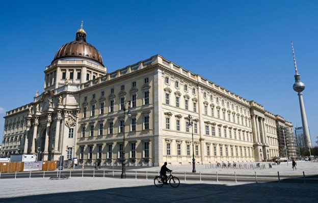

Topography of Terror

The site known since 1987 as the "Topography of Terror" was the central location from which the Nazis palnned
and managed most of their crimes. Here, between 1933 and 1945, the most important institutions of the Nazi
terror apparatus of the SS and police operated from the Secret State Police Office, the Reich SS Leadership,
and the Reich Security Main Office. Partially destroyed during the war, rendered unrecognizable after the
war by demolition and conversion, and eventually forgotten, this historic site was rediscovered in the early
1980s and gradually reestablished in the historical memory of Berlin and the Federal Republic of Germany.
What had been a partial wasteland in the shadow of the Berlin Wall was ultimately transormed into a center
for the documentation of Nazi crimes, and now attracts hundreds of thousands of visitors every year.
Humboldt Forum

The Humboldt Forum will unite various cultural and scientific institutions under its roof and function as a
new cultural city quarter in Berlin Mitte. The Ethnological Museum, the Museum of Asian Art, the Berlin
Exhibition and the Humboldt Laboratory of the Humboldt University will move into the Humboldt Forum.
Following the principle of the former Berlin Kunstkammer, the permanent exhibitions and temporary projects
will create a link between art and science. The concept of the Humboldt Forum thus borrows from the chambers
of art and curiosities at the princely courts of the 16th century, in which the fields of nature, art and
science were related to each other. All this awaits visitors to the modern Humboldt Forum as well. In
addition, the eventful history of the place where the City Palace now stands is thematised.
Natural History Museum

The museum shows the impact and work of evolution - from the formation of the cosmos and the earth, the life
and death of dinosaurs, the formation and migration of the continents, volcanoes and meteorite impacts, to
the mechanisms and phenomena that produced the diversity of life and species.